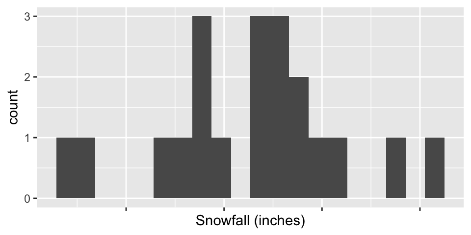
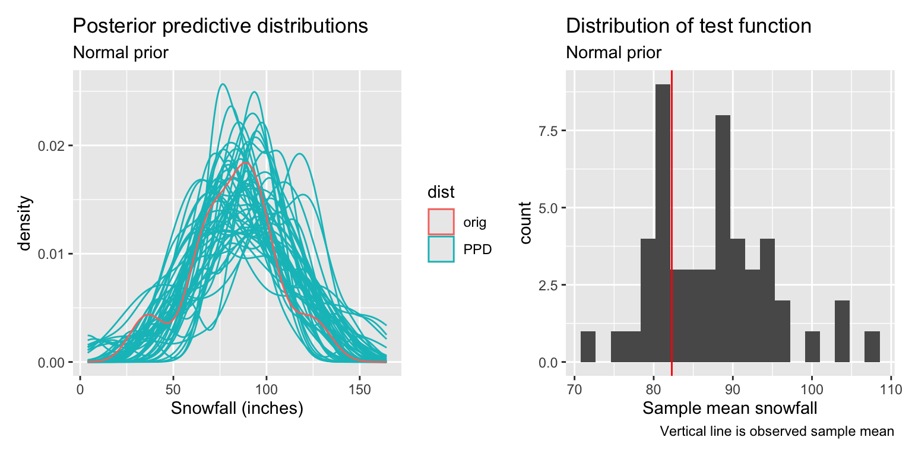
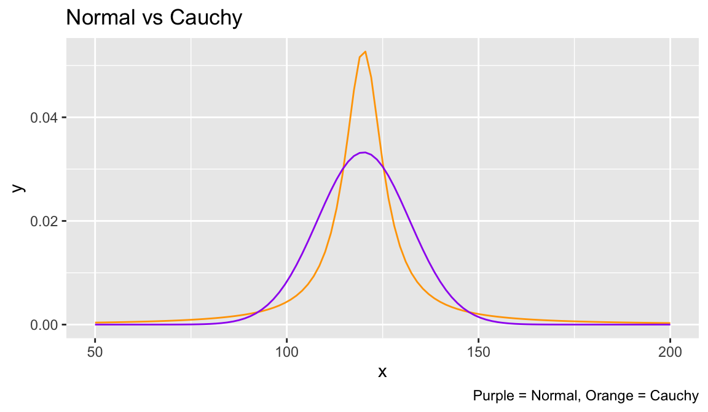
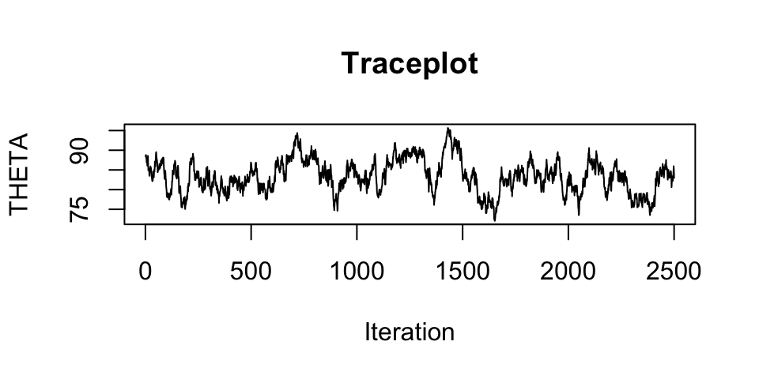
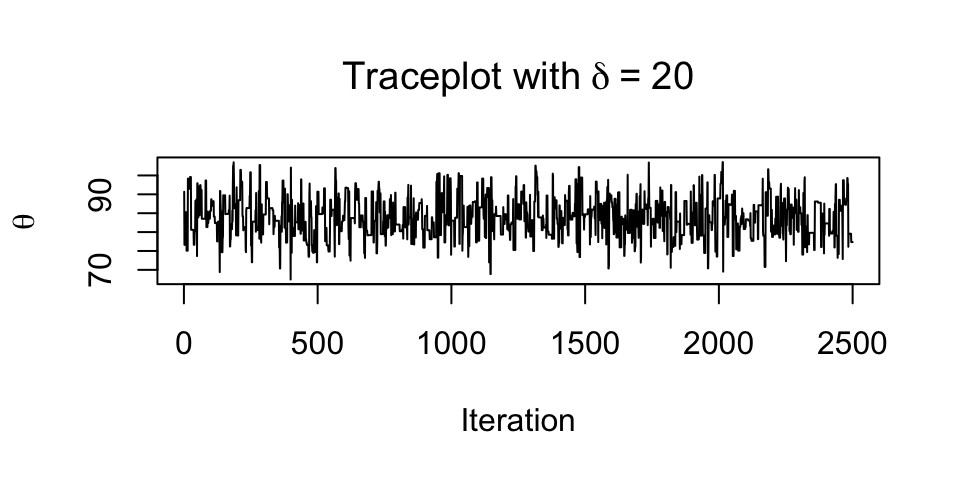
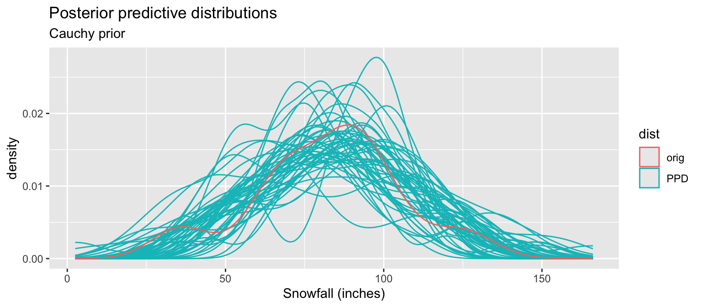
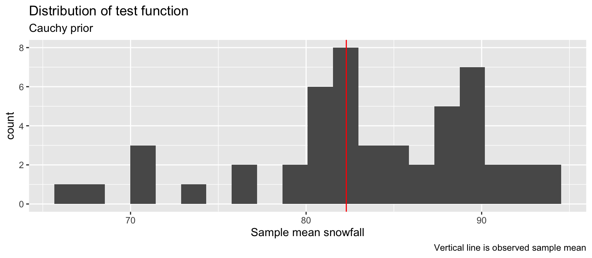

Metropolis example
Data
Maybe I’m thinking about moving to Burlington and I’d like to know the average amount of snowfall \(\theta\) I should expect in a given year. Luckily, there is some historic data about the observed total snowfall in Burlington from each winter season since 20004, courtesy of NOAA. Before taking a look at the data, we should formulate a prior. Let me first graph the data for you (hiding the values themselves):
Model 1
This looks like maybe we could model the yearly snowfall as Normal with unknown mean \(\theta\). For now, let’s assume that \(\sigma^2\) is equal to the observed sample variance \(s^2\) for simplicity (i.e. \(\sigma^2\) = 554.885).
Then a model that we’ve used before could be the Normal-Normal model:
\[Y_{i} | \theta \overset{iid}{\sim} N(\theta, 554.885) \qquad i = 1,\ldots, n = 20 \] \[\theta \sim N(\mu_{0}, \sigma_{0}^2)\] For my prior probability, I might think that on average, Burlington gets 10 feet = 120 inches of snow in a winter season, with a standard deviation of 1 foot = 12 inches. So \(\mu_{0} = 120\) and \(\sigma_0^2 = 144\). We could obtain Monte Carlo amples for \(\theta\) from its posterior directly, but let’s jump ahead to obtain some PPDs to see if this model is a good fit. I’ll simulate 50 PPDs, and graph them alongside the observed data. Additionally, I’ll calculate the test function \(T(\mathbf{y^*}) = \frac{1}{n} \sum y_{i}^*\) (i.e. the sample mean) for each PPD and compare them to the observed \(\bar{y}\).

What do we think about this model?
Model 2
Let’s consider the same sampling distribution model, but a different prior for \(\theta\). Maybe I’d like a prior for \(\theta\) that has thicker/heavier tails than a Normal distribution (i.e. has more prior probability for extreme values than the Normal). This could be useful since I actually don’t know what the average snowfall is, and my original prior could be way off.
Let’s consider the Cauchy distribution as a prior for \(\theta\) (a truly terrible distribution). The Cauchy distribution is parameterized by a location parameter \(\theta_{0} \in \mathbb{R}\) and a scale parameter \(\kappa >0\). If \(X \sim \text{Cauchy}(\mu_{0},\kappa)\) then its pdf is
\[f(x | \mu_0, \kappa) = \frac{1}{\pi \kappa \left( 1 + \left(\frac{x - \mu_{0}}{\kappa} \right)^2 \right)}, \qquad x \in \mathbb{R}\]
Weirdly, the Cauchy doesn’t have a finite mean.
For this Model 2, I will use the following prior for \(\theta\):
\[\theta \sim \text{Cauchy}(120, 6)\] Then this has similar prior beliefs as under the Normal above: this Cauchy is roughly centered at 10 feet of snow and has 70% prior probability of being between 9 and 11 feet:
qcauchy(0.15, 120, 6)/12 # convert to feet[1] 9.018695qcauchy(0.85, 120, 6)/12 [1] 10.98131Here, we can see the difference between the Normal prior from Model 1 and the new Cauchy prior from this new Model 2:

Unfortunately, the Cauchy is not a conjugate prior for the Normal sampling model. Rather than try to derive the posterior exactly, let’s instead use the Metropolis algorithm to approximate the posterior for \(\theta\)!
set.seed(412)
snow <- read_csv("../handouts/burlington_snow.csv")
y <- snow$snowfall
n <- length(y)
s2 <- var(y)
ybar <- mean(y)
loc0 <- 10*12
scale0 <- 12*(0.5)
S <- 5000
THETA <- rep(NA, S)
# keep track of how many times we accept
accept_vec <- rep(0, S)
delta <- 1 # a proposal of 1 inch
# initialize
theta <- loc0
for(s in 1:S){
# step 1: propose
theta_prop <- rnorm(1, theta, delta)
# step 2: calculate acceptance ratio (demonstrate why we log instead of prod)
log_r <- sum(dnorm(y, theta_prop, sqrt(s2), log = T)) -
sum(dnorm(y, theta, sqrt(s2), log = T)) +
dcauchy(theta_prop, loc0, scale0, log = T) -
dcauchy(theta, loc0, scale0, log = T)
# step 3: decide
u <- runif(1)
if(log(u) < log_r){ # remember: r is on log scale
theta <- theta_prop
accept_vec[s] <- 1
}
# else: keep theta where it currently is
## STORE like usual
THETA[s] <- theta
}
# burn
THETA <- THETA[-c(1:(S/2))]Let’s examine the traceplot for the chain after burn-in:

This looks bad! Why is that? Let’s also examine the proportion of times we accepted the proposal in our sampler:
mean(accept_vec)[1] 0.9446This is a very high acceptance probability! This means that about 95% of the time, we are accepting the proposed \(\theta^{(prop)}\). This means that the \(\delta\) we chose is too small; all proposed values are very similar to the “current” \(\theta\) and are thus getting accepted. This leads to high autocorrelation and stickiness in our chain, and thus the bad-looking traceplots. So we should increase \(\delta\)! Let’s try increasing \(\delta\) to see what happens. There is literature that suggests an ideal acceptance ratio for Metropolis is 0.234. Let’s try to get close to that:

This traceplot with \(\delta =\) 20 looks much better. The acceptance ratio now is 0.3166, which is much closer to “ideal”.
Now we can do posterior inference with \(\theta\) as we usually would! Let’s now do some a PPCs to compare Model 2 to Model 1. I will do the same before: obtain 50 PPDs and calculate the test function.


Remark on coding acceptance ratio
Note that we might that we are “lucky” that R provides the density functions dnorm() and dcauchy() for us. But we actually don’t need that! As long as we have closed-form expressions for the likelihood and prior (up to proportionality), we can calculate the acceptance ratio:
# set for demonstration
theta <- 100
theta_prop <- 102
# using R's functions
sum(dnorm(y, theta_prop, sqrt(s2), log = T)) -
sum(dnorm(y, theta, sqrt(s2), log = T)) +
dcauchy(theta_prop, loc0, scale0, log = T) -
dcauchy(theta, loc0, scale0, log = T)[1] -1.157209In the following, we leverage that when we take log densities, things cancel out:
\[\log f(\mathbf{y} | \theta) = -\frac{n}{2}\log(2\pi\sigma^2) - \frac{1}{2\sigma^2} \sum_{i=1}^{n}(y_i - \theta)^2 \Rightarrow\] \[\log f(\mathbf{y} | \theta^{(prop)}) - \log f(\mathbf{y} | \theta^{(s)}) = -\frac{1}{2\sigma^2} \sum_{i=1}^{n}(y_i - \theta^{(prop)})^2- \left(-\frac{1}{2\sigma^2} \sum_{i=1}^{n}(y_i - \theta^{(s)})^2 \right) \] Similarly
\[\log f(\theta) = \log \left(\frac{1}{\pi \kappa \left( 1 + \left(\frac{\theta - \mu_{0}}{\kappa} \right)^2 \right)}\right) = -\left( \log(\pi k) + \log \left( 1 + \left(\frac{\theta - \mu_{0}}{\kappa} \right)^2 \right) \right) \Rightarrow\]
\[\log f(\theta^{(prop)}) - \log f(\theta^{(s)}) = -\log \left( 1 + \left(\frac{\theta^{(prop)} - \mu_{0}}{\kappa} \right)^2 \right)- \left( \log \left( 1 + \left(\frac{\theta^{(s)} - \mu_{0}}{\kappa} \right)^2 \right)\right) \]
# typing out the densities ourselves (up to proportionality)
(-0.5)/s2 * sum((y - theta_prop)^2) - # log likelihood under theta_prop
(-0.5)/s2 * sum((y - theta)^2) + # log likelihood under current theta
- log(1 + ((theta_prop - loc0)/scale0)^2) - # log prior at theta_prop
- log(1 + ((theta- loc0)/scale0)^2) # log prior at current theta[1] -1.157209Notice that we get the same acceptance ratio!
This is especially useful when the likelihood is not one already provided by R.